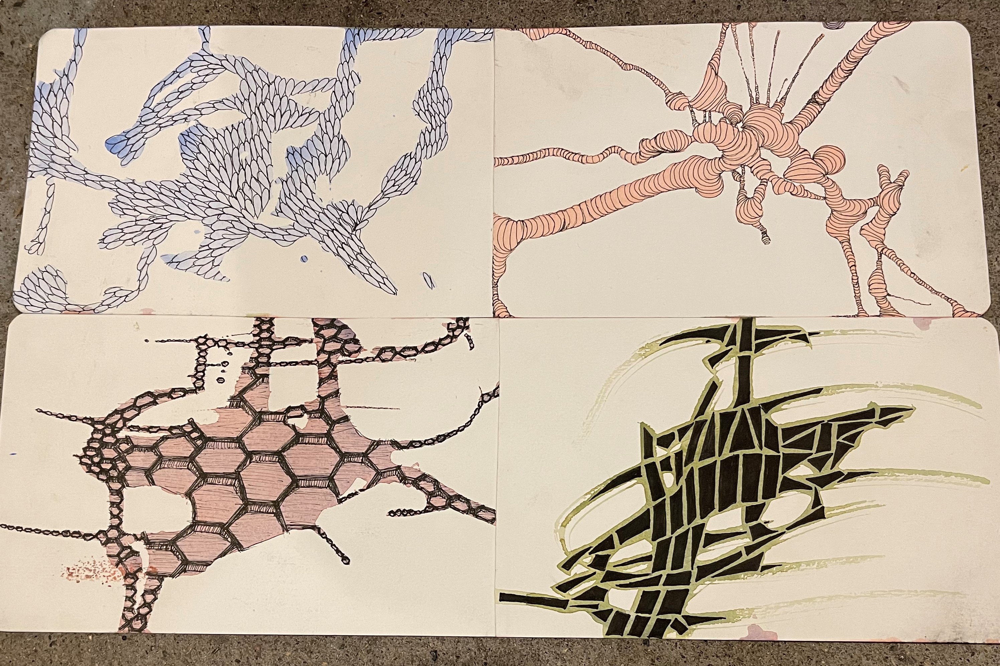

I have been in school for a few months now. I am really happy with all that I have learned so far in such a short amount of time! It has actually been extremely fun trying out different materials that I never would have thought of using before, like aluminum. I was honestly kind of scared when I first started just because I do not have any experience with traditional art. Fortunately though, my teachers have been very supportive and my months of digital drawing have translated into confidence with drawing on paper. I am not quite perfect at it yet and I still have a lot to learn, but I know that will just come with more practice.
This audio file is the sound of me sketching with charcoal. You can hear the different types of noises I made depending on how I moved my pencil. I made hatching motions, circular motions, and shading motions. I think it's a very satisfying to listen to. Sometimes while I'm drawing, I do not listen to music so I can relax and only hear these calming sounds.
The video file above is of me showing the camera what my hands look like after I have been sketching for a long time. When I draw with charcoal, my hands turn very black. When I use graphite, they turn a more silvery color, but get just as dirty. This is because the materials become powdery (especially the charcoal) while I am using them. This can be to my advantage, though, when I want to make shapes look softer or for shading. If I use a black glove with the fingertips cut off, it tends to lead to less of this mess.
In my AH-355 History of Graphic Design class, I had the opportunity to display my art work in Morrissey Gallery and St. Ambrose University. The project was in support of the Re/Building Community annual theme that the school currently has. I chose a historical inspiration and implemented it in a work that represents "where I come from." My inspiration was Simon de Colines from the Renaissance period and his beautifully detailed book covers. This project was a bit out of my comfort zone because I have not really ever made art that is introspective in nature. I ended up embracing it, though, and I would even like to redo it with a bit more contrast of black and white the next time.
I am currently working on a series of drawings related to the word "comb". This project started out as a challenge for me because it did not have a set of rules to constrain the works, like still-life might do. Our teacher instead encouraged us to think out-of-the-box and draw anything, in any style, that relates to the word we chose. Once I got started, I began to have fun with the project and I realized that my pieces do not have to represent what most people imagine the word "comb" to be. This truly freed my imagination and below is what I have come up with so far.
|  | ||
| Return To Homepage | See My Digital Art! | See My Computer Programs! |